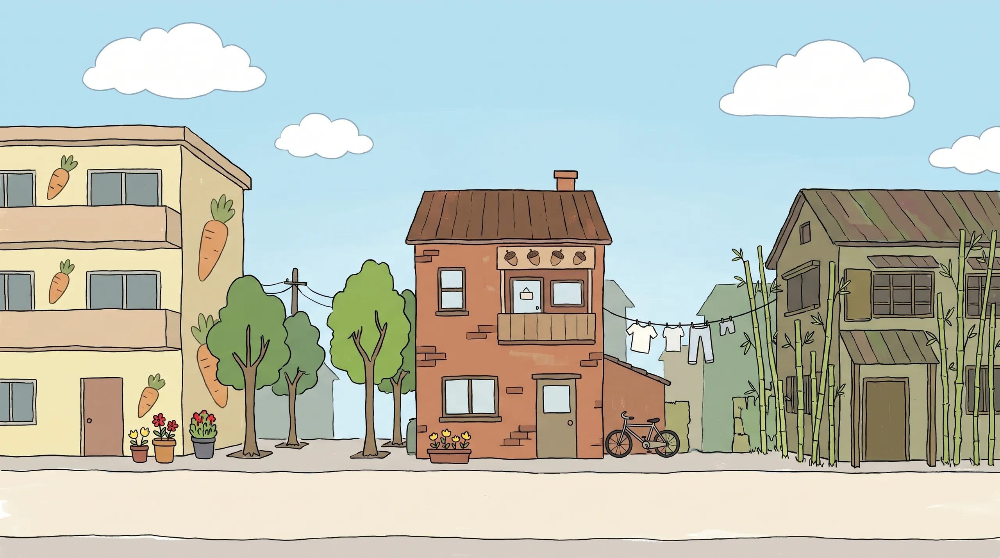

소심한 완벽주의자와 태평한 귀차니스트, 그리고 그들을 둘러싼 솜솜시티 이웃들의 우당탕탕 일상
이웃을 눌러 인사해 보세요
동물들이 사람처럼 모여 사는 도시, 솜솜시티
겉보기엔 평범한 도시지만 종족마다 사는 방식이 조금씩 달라요. 나무늘보는 먹방을 해도 천천히 씹고, 다람쥐는 뭐든 주머니에 줍고, 거북이는 터틀넥을 입어요. 당근빌라와 대나무숲 빌라 이웃들의 소소한 다툼과 화해를 그립니다.
그런 너라서 좋아Because you're you.
이웃들은 이런 사이예요
관계도에서 이웃을 누르면 그 이웃의 관계만 볼 수 있어요. 관계도 v0.1 · 은녕 확인
솜솜시티 소식
인스타그램과 유튜브에서 새 이야기를 만나요.
시안에서는 예시 그림으로 채웠습니다. 실제 사이트에서는 인스타 게시물 주소를 넣으면 그 게시물이 그대로 보이고, 쇼츠는 페이지 안에서 재생됩니다.
솜솜시티 굿즈, 준비하고 있어요
이웃들을 곁에 둘 수 있는 물건을 만들고 있어요. 소식은 인스타그램에서 가장 먼저 알려 드릴게요.
그래서 우리가 널 좋아해
That's why we love you.